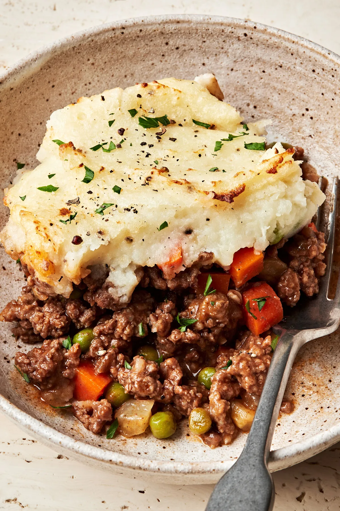
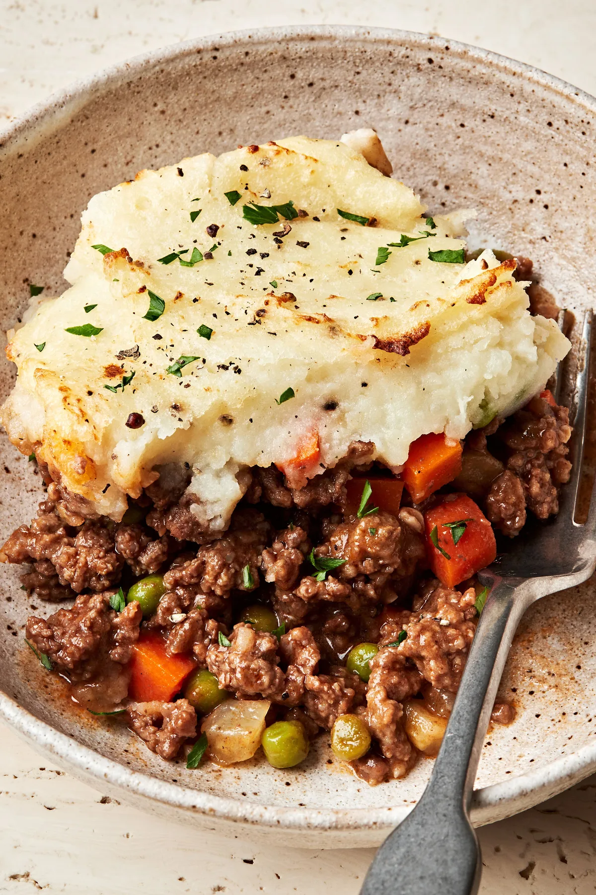

Welkom
Over ons
Shepherd’s Pie is een Folkgroep vol Ierse muziek maar af en toe ook een uitstapje naar Schotland en Amerika. In september 2011 hebben een aantal mannen uit de regio Hardinxveld het initiatief genomen te starten met een folkgroep, welke als repertoire Ierse songs speelt en zingt. Zij hebben zich voor de keuze van deze muziek laten inspireren door o.a. de Dubliners, Fureys en Paddy’s Passion.
De band bestaat momenteel uit 8 personen en ze begeleiden zichzelf met o.a. gitaar, viool, monharmonica, mandoline, banjo, accordeon en trekharmonica.
Gemiddeld treden we 12 to 18 keer per jaar op. Dit hebben we voorheen gedaan op festivals in o.a. Appingedam, Leeuwarden, Giethoorn, Rotterdam, Roosendaal, Heusden, Woerden en tijdens het Vegedack festival in Bremen. Daarnaast treden we op in verzorgingshuizen, allerlei soorten verenigingen, op braderiën en elk jaar in de Cultuurschuur in Monster. Ook hebben wij twee keer opgetreden op uitnodiging van Shanty Nederland in Putten.
De naam, Shepherd’s Pie, die we als groep hebben gekozen, is oorspronkelijk een Iers gerecht, dat bestaat uit aardappelen, diverse groenten en vlees. In het kort gezegd een soort mengelmoes, die we als groep immers ook zijn, mensen uit diverse plaatsen met verschillende karakters.

 
